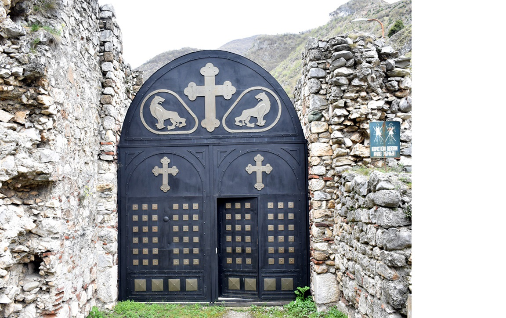

Цар Стефан Душан Немањић, познат као Душан Силни, био је најмоћнији српски владар и један од најзначајнијих
личности средњовековне Европе. Рођен је око 1308. године као син краља Стефана Дечанског и краљице Теодоре.
Од малена је показивао изузетне војне и дипломатске способности. Већ 1331. године, после сукоба са оцем,
преузео је престо и крунисан је за краља у Скопљу.
Владaвина
Током своје владавине, Душан је водио бројне успешне војне походе. Освојио је значајне делове Византијског
царства, укључујући Епир, Тесалију и велике делове Македоније и Тракије. Његова држава је постала највећа у
историји средњовековне Србије. Крунисан је за цара Срба и Грка на Васкрс 16. априла 1346.
године у Скопљу, уз подршку српског патријарха, бугарског патријарха и представника Свете Горе.
Мапа Душановог Царства
Душанов законик
Године 1349. у Скопљу је донет први део Душановог законика, а 1354. у Серу је додат други део. Законик је
садржао преко 200 чланова и регулисао је све аспекте друштвеног, црквеног и правног живота. Био је један од
најразвијенијих правних система у Европи тог доба. Душан је инсистирао на правди и реду, кажњавајући
корупцију, лоповлук и издају најстрожим казнама.
Страница из Душановог Законика, 14. век
Задужбине
Цар Душан је био изузетан ктитор. Његова најпознатија задужбина је манастир Светих Архангела
код Призрена, подигнут у близини старе царске престонице. Манастир је био задивљујући спој архитектуре и
уметности, а Душан је у њему и сахрањен. Подржавао је и обнову и проширење манастира у Србији и Грчкој,
укључујући и бројне светогорске светиње.

Манастир Светих Архангела, кањон реке Призренске Бистрице у Метохији
Хиландар и православље
Душан је био велики заштитник православља. Подржавао је монашки живот и проширио аутономију Српске цркве.
Оснивањем Српског патријархата у Пећи, 1346. године, Српска архиепископија је уздигнута на
ниво патријаршије. Душан је такође даривао манастир Хиландар и друге светогорске манастире земљом, златом и
виноградима.
Душанов златник
За време његове владавине, Србија је ковала златнике и сребрњаке високог квалитета, по угледу на византијски
новац. Душанов златник носио је његов лик са царском круном и крстом у руци. Новац је био доказ економске
снаге и државне суверености, а користио се широм Балкана у трговини и дипломатији.
Наслеђе
Цар Душан је преминуо изненада 20. децембра 1355. године, током припрема за поход на Цариград. Сахрањен је у
манастиру Светих Архангела. Наследио га је син Урош, познат као Урош Нејаки, који није имао снаге да одржи
јединство царства. Душаново име и дело остали су дубоко укорењени у националну свест као симбол снаге,
правде и духовне величине.
Српско царство 1360. године, у време цара Уроша, са територијама обласних господара.
Занимљивости о Цару Душану
Цар Душан је имао војску од преко 80.000 људи, једну од највећих у тадашњој Европи.
Планирао је да освојии Цариград и крунише се као цар Византије, али је изненада
преминуо.
Његово тело је 1927. године пренето из Призрена и данас почива у манастиру Светог Марка у
Београду.
Према народном предању, био је висок преко 2 метра, па је називан „Силни“ због физичке
и политичке моћи.
Душанов законик био је толико напредан да се користио као модел правде и у каснијим
вековима.
Цар Душан је носио титулу „Велики Краљ Срба и Грка“ и прогласио се царем 1346. године.
Његов дворац у Скопљу био је један од најимпресивнијих средњовековних замкова на Балкану.
Основао је бројне манастире и задужбине, од којих су неки и данас значајни споменици културе.
За време његове владавине, српска држава је била највећа у својој историји, обухватајући делове данашње
Србије, Македоније, Грчке и Албаније.
Душанова смрт је изазвала пад српске моћи јер његов наследник није имао довољно снаге да одржи царство.
Легенда каже да је Душан био толико моћан да је чак и небо „држао у својим рукама“.
Његов законик је био написан на старосрпском језику и садржао је преко 200 чланова, регулишући све
аспекте живота и права.
Последње ажурирање: јул 2025.
Car Dušan Silni
Freska cara Dušana, manastir Lesnovo
Uvod
Car Stefan Dušan Nemanjić, poznat kao Dušan Silni, bio je najmoćniji srpski vladar i jedna od najznačajnijih
ličnosti srednjovekovne Evrope. Rođen je oko 1308. godine kao sin kralja Stefana Dečanskog i kraljice
Teodore. Još kao mlad pokazivao je izuzetne vojne i diplomatske sposobnosti. Već 1331. godine, posle sukoba
sa ocem, preuzeo je presto i krunisan je za kralja u Skoplju.
Vladavina
Tokom svoje vladavine, Dušan je vodio brojne uspešne vojne pohode. Osvojio je značajne delove Vizantijskog
carstva, uključujući Epir, Tesaliju, veliki deo Makedonije i Trakije. Njegova država postala je najveća u
istoriji srednjovekovne Srbije. Krunisan je za cara Srba i Grka na Vaskrs, 16. aprila 1346.
godine u Skoplju, uz prisustvo srpskog patrijarha, bugarskog patrijarha i predstavnika Svete Gore.
Mapa Dušanovog Carstva
Dušanov zakonik
Godine 1349. u Skoplju je donet prvi deo Dušanovog zakonika, a 1354. u Seru drugi deo. Zakonik je sadržao
preko 200 članova i regulisao sve aspekte društvenog, crkvenog i pravnog života. Bio je jedan od
najrazvijenijih pravnih sistema u Evropi tog doba. Dušan je insistirao na pravdi i redu, strogo kažnjavajući
korupciju, krađu i izdaju.
Stranica iz Dusanovog Zakonika 14.vek
Zadužbine
Car Dušan bio je veliki ktitor. Njegova najpoznatija zadužbina je manastir Svetih Arhangela
kod Prizrena, podignut u blizini stare carske prestonice. Manastir je bio impozantan spoj arhitekture i
umetnosti, a Dušan je u njemu i sahranjen. Podržavao je obnovu i širenje mnogih manastira, kako u Srbiji
tako i u Grčkoj, uključujući i svetogorske svetinje.
Manastir Sveti Arhangeli, kanjon reke Prizrenske Bistrice u Metohiji
Hilandar i pravoslavlje
Dušan je bio veliki zaštitnik pravoslavlja. Podržavao je monaški život i učvrstio samostalnost Srpske crkve.
Osnivanjem Srpskog patrijarhata u Peći 1346. godine, Srpska arhiepiskopija je uzdignuta na
rang patrijaršije. Dušan je darivao manastir Hilandar i druge svetogorske manastire zlatom, zemljom i
vinogradima.
Dušanov zlatnik
Tokom njegove vladavine kovan je zlatni i srebrni novac visokog kvaliteta, po uzoru na vizantijski novac.
Dušanov zlatnik nosio je njegov lik sa carskom krunom i krstom u ruci. Ovi novčići predstavljali su simbol
suverenosti i ekonomske moći, i korišćeni su širom Balkana u trgovini i diplomatiji.
Nasleđe
Car Dušan je iznenada preminuo 20. decembra 1355. godine, tokom priprema za pohod na Carigrad. Sahranjen je u
manastiru Svetih Arhangela. Nasledio ga je sin Uroš, poznat kao Uroš Nejaki, koji nije uspeo da održi
jedinstvo carstva. Dušanovo ime i delo ostali su duboko ukorenjeni u srpskoj svesti kao simbol moći, zakona
i duhovne veličine.
Srpsko carstvo 1360. godine, u vreme cara Uroša, sa teritorijama oblasnih gospodara.
Zanimljivosti o Caru Dušanu
Car Dušan je imao vojsku od preko 80.000 ljudi, jednu od najvećih u tadašnjoj Evropi.
Planirao je da osvoji Carigrad i kruniše se kao car Vizantije, ali je iznenada
preminuo.
Njegovo telo je 1927. godine preneto iz Prizrena i danas počiva u manastiru Svetog Marka u
Beogradu.
Prema narodnom predanju, bio je visok preko 2 metra, pa je nazivan "Silni" zbog fizičke
i političke moći.
Dušanov zakonik bio je toliko napredan da se koristio kao model pravde i u kasnijim
vekovima.
Car Dušan je nosio titulu „Veliki Kralj Srba i Grka“ i proglasio se carem 1346. godine.
Njegov dvorac u Skoplju bio je jedan od najimpresivnijih srednjovekovnih zamkova na Balkanu.
Osnovao je brojne manastire i zadužbine, od kojih su neki i danas značajni spomenici kulture.
Za vreme njegove vladavine, srpska država je bila najveća u svojoj istoriji, obuhvatajući delove
današnje Srbije, Makedonije, Grčke i Albanije.
Dušanova smrt je izazvala pad srpske moći jer njegov naslednik nije imao dovoljno snage da održi
carstvo.
Legenda kaže da je Dušan bio toliko moćan da je čak i nebo „držao u svojim rukama“.
Njegov zakonik je bio napisan na starosrpskom jeziku i sadržao je preko 200 članova, regulišući sve
aspekte života i prava.
Poslednje ažuriranje: jul 2025.
Tsar Dušan the Mighty
Fresco of Tsar Dušan, Lesnovo Monastery
Introduction
Tsar Stefan Dušan Nemanjić, known as Dušan the Mighty, was the most powerful Serbian ruler and one of the
most significant figures in medieval Southeastern Europe. He was born around 1308, the son of King Stefan
Dečanski and Queen Teodora. From an early age, he showed exceptional leadership, military talent, and
strategic thinking. In 1331, after a political conflict with his father, he seized the throne and was
crowned king in Skopje.
Reign
During his reign, Dušan launched numerous successful military campaigns, expanding the Serbian state deep
into Byzantine territory. He conquered Epirus, Thessaly, large parts of Macedonia and Thrace. His empire
became the largest in medieval Serbian history. He was crowned Emperor of the Serbs and
Greeks on Easter Sunday, April 16, 1346, in Skopje, with the blessing of the Serbian Patriarch,
the Bulgarian Patriarch, and representatives of Mount Athos.
Map of Dušan's Empire
Dušan's Code
In 1349, in Skopje, Dušan enacted the first part of his legal code, with a second part added in Serres in
1354. The Dušan’s Code consisted of over 200 articles and regulated civil, ecclesiastical,
and legal matters. It was one of the most advanced legal systems of its time in Europe. Dušan emphasized
justice and order, imposing strict punishments for corruption, theft, and treason.
Page from Dušan's Code, 14th century
Endowments
Tsar Dušan was a generous benefactor. His most famous foundation is the Monastery of the Holy
Archangels near Prizren, built near the imperial residence. It combined architectural splendor
with spiritual significance and served as his burial site. He also supported the restoration and expansion
of monasteries in Serbia and Greek lands, including on Mount Athos.
Monastery of the Holy Archangels, canyon of the Prizren Bistrica River in Metohija
Hilandar and Orthodoxy
Dušan was a staunch protector of Eastern Orthodoxy. He supported monastic life and strengthened the
independence of the Serbian Church. In 1346, he elevated the Serbian Archbishopric to the
Patriarchate of Peć. He generously donated gold, land, and vineyards to the Hilandar
Monastery and other religious institutions on Mount Athos.
Dušan's Gold Coin
During his reign, the Serbian state minted high-quality gold and silver coins modeled after Byzantine
currency. The Dušan's gold coin bore his likeness with an imperial crown and a cross in
hand. It symbolized sovereignty, economic strength, and legitimacy and was widely used in Balkan trade and
diplomacy.
Legacy
Tsar Dušan died unexpectedly on December 20, 1355, while preparing for a military campaign toward
Constantinople. He was buried in the Monastery of the Holy Archangels. He was succeeded by his son Uroš,
known as Uroš the Weak, who was unable to preserve the unity of the empire. Dušan’s legacy remains a symbol
of Serbian imperial glory, justice, and spiritual depth.
The Serbian Empire in 1360, during the reign of Emperor Uroš, with the territories of
regional lords.
Interesting Facts about Tsar Dušan
Tsar Dušan commanded an army of over 80,000 soldiers, one of the largest in Europe at
the time.
He planned to conquer Constantinople and crown himself Emperor of Byzantium but died
suddenly before he could.
His body was transferred from Prizren in 1927 and now rests in the Church of St. Mark in
Belgrade.
According to folk tradition, he was over 2 meters tall, earning the nickname "the
Mighty" for his physical and political power.
The Dušan’s Code was so advanced that it served as a model of justice for centuries
after.
Tsar Dušan held the title “The Great King of Serbs and Greeks” and proclaimed himself
emperor in 1346.
His palace in Skopje was one of the most impressive medieval castles in the Balkans.
He founded numerous monasteries and endowments, some of which remain significant cultural monuments
today.
During his reign, the Serbian state was the largest in its history, encompassing parts of modern Serbia,
North Macedonia, Greece, and Albania.
Dušan’s death caused the decline of Serbian power, as his successor lacked the strength to maintain the
empire.
Legend says Dušan was so mighty he even “held the sky in his hands.”
His legal code was written in Old Serbian and contained over 200 articles, regulating all aspects of
life and law.